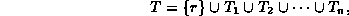
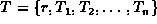
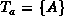
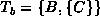
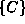
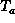
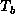
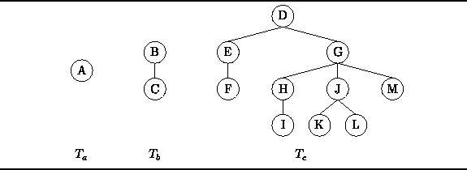

Data Structures and Algorithms
with Object-Oriented Design Patterns in Java
Data Structures and Algorithms
with Object-Oriented Design Patterns in JavaThe following is a mathematical definition of a tree:
Definition (Tree) A tree T is a finite, non-empty set of nodes ,
with the following properties:
For convenience, we shall use the notation  to denote the tree T.
Notice that Definition  is recursive--a tree is defined in terms of itself!
Fortunately, we do not have a problem with infinite recursion
because every tree has a finite number of of nodes
and because in the base case a tree has n=0 subtrees.
is recursive--a tree is defined in terms of itself!
Fortunately, we do not have a problem with infinite recursion
because every tree has a finite number of of nodes
and because in the base case a tree has n=0 subtrees.
It follows from Definition
that the minimal tree is a tree comprised of a single root node.
For example  is such a tree.
When there is more than one node,
the remaining nodes are partitioned into subtrees.
For example, the  is a tree which is comprised of
the root node B and the subtree .
Finally, the following is also a tree
How do , , and  resemble their arboreal namesake?
The similarity becomes apparent when we consider the graphical
representation of these trees shown in Figure .
To draw such a pictorial representation of a tree,
,
the following recursive procedure is used:
First, we first draw the root node r.
Then, we draw each of the subtrees, , , ..., ,
beside each other below the root.
Finally, lines are drawn from r to the roots of each of the subtrees.
resemble their arboreal namesake?
The similarity becomes apparent when we consider the graphical
representation of these trees shown in Figure .
To draw such a pictorial representation of a tree,
,
the following recursive procedure is used:
First, we first draw the root node r.
Then, we draw each of the subtrees, , , ..., ,
beside each other below the root.
Finally, lines are drawn from r to the roots of each of the subtrees.

Figure: Examples of trees.
Of course, trees drawn in this fashion are upside down. Nevertheless, this is the conventional way in which tree data structures are drawn. In fact, it is understood that when we speak of ``up'' and ``down,'' we do so with respect to this pictorial representation. For example, when we move from a root to a subtree, we will say that we are moving down the tree.
The inverted pictorial representation of trees is probably due to the way that genealogical lineal charts are drawn. A lineal chart is a family tree that shows the descendants of some person. And it is from genealogy that much of the terminology associated with tree data structures is taken.
 Copyright © 1998 by Bruno R. Preiss, P.Eng. All rights reserved.
Copyright © 1998 by Bruno R. Preiss, P.Eng. All rights reserved.